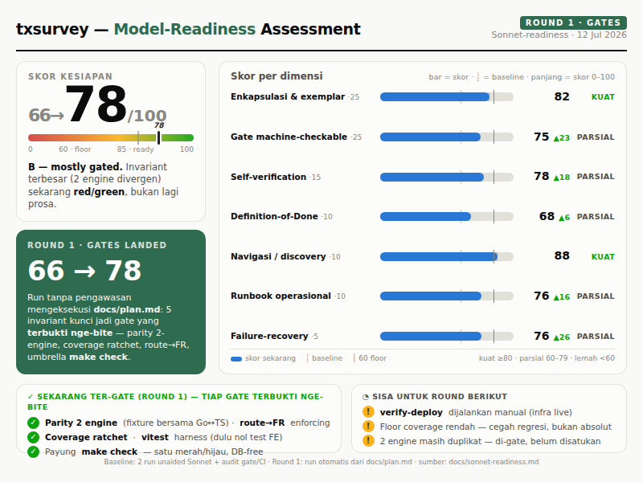

Skor ini memprediksi apakah agent Sonnet — hanya diberi repo + docs, tanpa manusia menarasikan invariant — bisa menyelesaikan task representatif dengan benar dan sesuai gaya rumah.
Read: “C+/B−, tulang bagus + CI sudah lumayan, tapi invariant terpenting belum ter-gate.” Repo ini sudah Sonnet-ready untuk kerja yang pattern-obvious (kedua spike membuktikannya). Risiko sisa: invariant yang tidak pattern-obvious, atau yang bisa dilewati run malas sambil tetap hijau.

Terkuat kedua — terukur, bukan tebakan. 2/2 run mengikuti invariant tanpa disuruh: run A merangkai operator logika baru di kedua engine + model + builder + migration + FR; run B merangkai tipe pertanyaan baru di seluruh rantai. Keduanya memilih exemplar yang benar. Dibatasi 82 karena logic engine terduplikasi (Go ↔ TS) — anti-enkapsulasi yang bertahan hanya karena diingatkan doc, bukan karena desain mencegah divergensi.
Gap utama. Sudah ada: CI matrix (lint, go test -race + Postgres, FE typecheck+build, Playwright E2E), spec-validate (gate FR-kontrak), docs-check. Belum ada: parity gate dua engine (invariant #1 cuma dijaga prosa ADR), coverage ratchet (spike nambah test karena memilih, bukan dipaksa), route→FR spec-drift masih advisory, dan nol unit test frontend.
Tiap gate deterministik & dijalankan CI, tapi worker harus tahu menjalankan empat perintah terpisah (make lint, make test, npm run build, make docs-check) — tidak ada payung make check. Coverage tidak ditampilkan. Tier integrasi butuh DATABASE_URL *_test manual.
DoD nyata & berfungsi — “3 artefak” Lean SDD + checklist eksplisit “Adding a question type or operator” di CLAUDE.md itulah kenapa run A sync FR tanpa disuruh. Tapi berupa prosa tersebar di CLAUDE.md ~200 baris, bukan satu checklist yang menunjuk ke perintah gate.
Dimensi terkuat — terukur. Kedua run menemukan file yang tepat dengan cepat, memilih analog yang benar, dan menggunakan ulang, bukan menemukan-ulang. Nama = fitur (features/builder, logic_engine.go ↔ logicEngine.ts); “things that will bite you” di CLAUDE.md bikin “X ada di mana” ≤1 hop.
Deploy tercatat sebagai section CLAUDE.md dengan perintah docker compose yang tepat & cukup linear — tapi berupa prosa, tidak ada docs/runbooks/, dan tidak ada smoke gate pasca-deploy (sukses deploy masih “dilihat mata”).
Gotcha tersebar inline di CLAUDE.md (port 8080, guard DB *_test, migration forward-only, slug-lock). Tidak ada tabel gejala→sebab→fix. Tabrakan nomor migration yang benar-benar dialami run A adalah skenario recovery yang belum terdokumentasi.
contains di kedua engine; tabel validateAnswer tinggal disalin) dan karena checklist CLAUDE.md menyuruh menyentuh kedua engine — bukan karena ada gate yang menangkap kesalahan. Persis tesis kit: repo menaikkan lantai lewat doc + exemplar; cara menaikkan lebih jauh adalah mengubah invariant yang belum ter-gate menjadi merah/hijau.
Dua agent Sonnet unaided, tanpa hint, di task representatif. Diff-nya diverifikasi Opus (bukan percaya laporan sendiri). Kode kedua spike di-revert setelah skoring — ini pengukuran, bukan fitur.
starts_with✓ PASSTes lockstep dua engine. Model meng-update kedua engine (logic_engine.go + logicEngine.ts), const model, daftar operator builder, type union, migration 008 (bahkan renumber sendiri setelah tabrakan dengan 007 run B), test Go, dan sync fr-forms.md tanpa disuruh. Diverifikasi ke Postgres live. Level ekspert.
phone✓ PASSRantai penuh benar: migration 007, const + ValidQuestionType, case validateAnswer (regex), runner QuestionScreen, questionTypes.ts, type union — plus unit test yang ditambah sendiri dengan meniru tabel exemplar. Memilih email (bukan rating yang disarankan PM) sebagai analog struktural yang tepat.
(answer, operator, value) → expected dijalankan lewat kedua implementasi conditionMatches, merah kalau berbeda. Mengubah invariant prosa ADR-001 jadi merah/hijau. Win tunggal terbesar.make check. Satu target membungkus lint + test + FE build + docs-check (+ parity + coverage) — satu merah/hijau yang tak bisa dilewatkan worker lemah.spec-drift enforcing. Promosikan route→FR dari advisory (exit 0) jadi gate keras dengan waiver untuk legacy.docs/runbooks/ + smoke gate + recovery.md. Linearkan prosa deploy; tambah verify-deploy (container up → /health → edge publik); tulis tabel gejala→fix.| Gate | Perintah | Status |
|---|---|---|
| Lint (vet + gofmt) | make lint | enforced · CI |
| Test (+race, +DB) | make test | enforced · CI |
| FE typecheck + build | npm run build | enforced · CI |
| E2E create-survey | Playwright | enforced · CI |
| FR contract schema | make spec-validate | enforced |
| Koherensi docs | make docs-check | enforced |
| Route → FR | make spec-drift | advisory (exit 0) |
| Parity dua engine | — | tidak ada |
| Coverage ratchet | — | tidak ada |
| Payung satu perintah | — | tidak ada |
| Smoke pasca-deploy | — | tidak ada |
owner_id = $ AND deleted_at IS NULL di tiap query form-scoped · jump forward-only · validasi submit tetap logic-aware · tipe/operator baru menyusuri rantai penuh CLAUDE.md · migration ambil nomor berikutnya, forward-only · FR pemilik diupdate di perubahan yang sama · make lint + make test + FE build + make docs-check hijau.{kind=link}